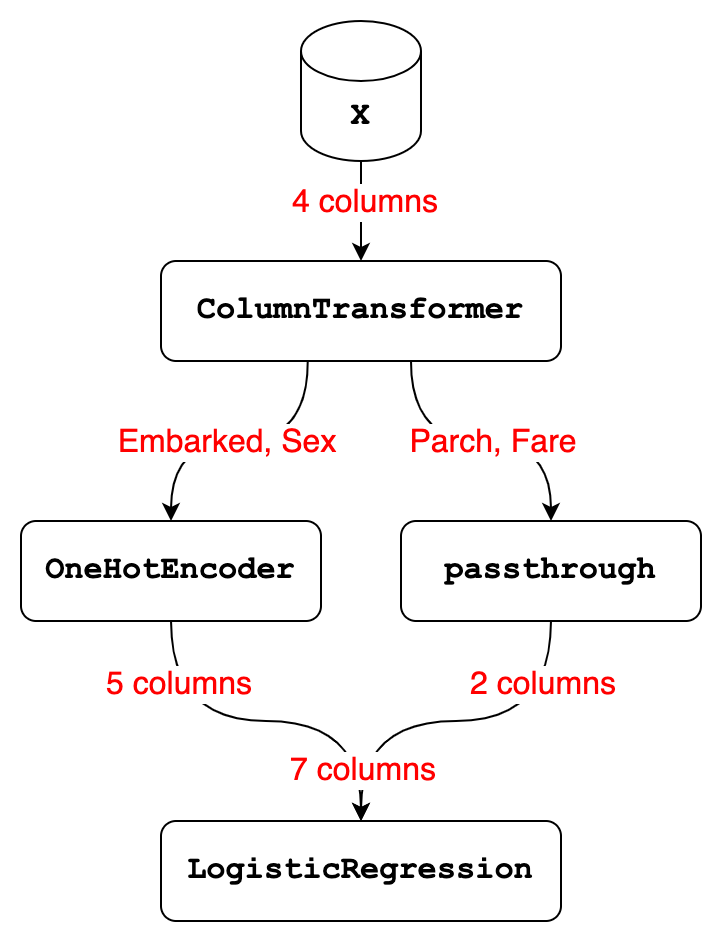

import pandas as pd
from sklearn.preprocessing import OneHotEncoder
from sklearn.linear_model import LogisticRegression
from sklearn.compose import make_column_transformer
from sklearn.pipeline import make_pipeline5 Workflow review #1
5.1 Recap of our workflow
In this chapter, we’re going to review the workflow that we’ve built so far to make sure you understand the key concepts before we start adding additional complexity.
To start, we’re going to walk through all of the code that is necessary to recreate our workflow up to this point. We begin by importing pandas, the OneHotEncoder and LogisticRegression classes, and the make_column_transformer and make_pipeline functions.
Next, we create a list of the four columns we’re going to select from our data.
cols = ['Parch', 'Fare', 'Embarked', 'Sex']Then, we read in 10 rows of training data and use it to define our X and y.
df = pd.read_csv('http://bit.ly/MLtrain', nrows=10)
X = df[cols]
y = df['Survived']And we read in 10 rows of new data and use it to define X_new.
df_new = pd.read_csv('http://bit.ly/MLnewdata', nrows=10)
X_new = df_new[cols]We create an instance of OneHotEncoder, which is our only transformer at this point.
ohe = OneHotEncoder()And then we build the ColumnTransformer, which one-hot encodes Embarked and Sex and passes through Parch and Fare.
ct = make_column_transformer(
(ohe, ['Embarked', 'Sex']),
('passthrough', ['Parch', 'Fare']))We also create an instance of logistic regression.
logreg = LogisticRegression(solver='liblinear', random_state=1)Finally, we create a two-step Pipeline, fit the Pipeline to X and y, and use the fitted Pipeline to make predictions on X_new.
pipe = make_pipeline(ct, logreg)
pipe.fit(X, y)
pipe.predict(X_new)array([0, 1, 0, 0, 1, 0, 1, 0, 1, 0])That’s really all the code we need to recreate our entire workflow from the last few chapters. You’ll notice that there are no calls to fit_transform or transform because all of that functionality is encapsulated by the Pipeline.
I did exclude cross-validation from this recap because, as mentioned previously, any model evaluation procedure is highly unreliable with only 10 rows of data. However, we will thoroughly explore the topic of model evaluation later in the book, once we are using the full dataset.
5.2 Comparing ColumnTransformer and Pipeline
In order to be successful with the rest of this book, it’s very important that you clearly understand the differences between a ColumnTransformer and a Pipeline. In this lesson, I’m going to explain those differences. This diagram should help to illustrate the concepts.
Let’s start with the ColumnTransformer, which received 4 columns of input from the X DataFrame:
- It selected 2 of those columns, namely Embarked and Sex, and used the OneHotEncoder to transform them into 5 columns.
- It selected the other 2 columns, namely Parch and Fare, and did nothing to them, which of course resulted in 2 columns.
- Finally, it stacked the 5 columns output by OneHotEncoder and the 2 columns output by the passthrough transformer side-by-side, resulting in a total of 7 columns.
Now let’s talk about the Pipeline, which has 2 steps:
- Step 1 is a ColumnTransformer that received 4 columns of input and transformed them into 7 columns.
- Step 2 is a logistic regression model that received 7 columns of input and used those 7 columns either for fitting or predicting.

With those examples in mind, we can step back and summarize the differences between a ColumnTransformer and a Pipeline:
- A ColumnTransformer pulls out subsets of columns and transforms them independently, and then stacks the results side-by-side.
- It only ever does data transformations, meaning your ColumnTransformer will never include a model.
- And it does not have steps, because each subset of columns is transformed independently. In other words, data does not flow from one transformer to the next.
In contrast:
- A Pipeline is a series of steps that occur in order, and the output of each step becomes the input to the next step.
- Thus if you had a 3-step Pipeline, the output of step 1 becomes the input to step 2, and the output of step 2 becomes the input to step 3.
- The last step of a Pipeline can be a model or a transformer, whereas all other steps must be transformers.
In summary, a Pipeline contains steps that operate in sequence, whereas a ColumnTransformer contains transformers that operate in parallel. In later chapters, you’ll see why this difference is so important and how it guides the structure of our workflow.
5.3 Creating a Pipeline diagram
To wrap up this chapter, I want to show you a feature that’s new in scikit-learn version 0.23 that can help you to visualize and thus better understand your Pipelines.
To start, we’ll import the set_config function. Then we run it and set the display parameter to “diagram”.
from sklearn import set_config
set_config(display='diagram')With that configuration, you’ll see a diagram any time you print out a Pipeline (or any other estimator) within Jupyter.
This is basically the same diagram I created. And you can actually click on any element in order to see more details. For example, if you click on the transformer names, you can see the columns they’re transforming. And if you click on the class names, you can see any parameters that have been changed from their default values.
pipePipeline(steps=[('columntransformer',
ColumnTransformer(transformers=[('onehotencoder',
OneHotEncoder(),
['Embarked', 'Sex']),
('passthrough', 'passthrough',
['Parch', 'Fare'])])),
('logisticregression',
LogisticRegression(random_state=1, solver='liblinear'))])ColumnTransformer(transformers=[('onehotencoder', OneHotEncoder(),
['Embarked', 'Sex']),
('passthrough', 'passthrough',
['Parch', 'Fare'])])['Embarked', 'Sex']
OneHotEncoder()
['Parch', 'Fare']
passthrough
LogisticRegression(random_state=1, solver='liblinear')
If you use this configuration but you ever need to see the regular text output, you can just use the print function with your Pipeline.
print(pipe)Pipeline(steps=[('columntransformer',
ColumnTransformer(transformers=[('onehotencoder',
OneHotEncoder(),
['Embarked', 'Sex']),
('passthrough', 'passthrough',
['Parch', 'Fare'])])),
('logisticregression',
LogisticRegression(random_state=1, solver='liblinear'))])Finally, it’s worth noting that displaying diagrams is the default starting in scikit-learn version 1.1. If you’d prefer to always see the text output, you can change the configuration by setting the display parameter to “text”.
set_config(display='text')
pipePipeline(steps=[('columntransformer',
ColumnTransformer(transformers=[('onehotencoder',
OneHotEncoder(),
['Embarked', 'Sex']),
('passthrough', 'passthrough',
['Parch', 'Fare'])])),
('logisticregression',
LogisticRegression(random_state=1, solver='liblinear'))])